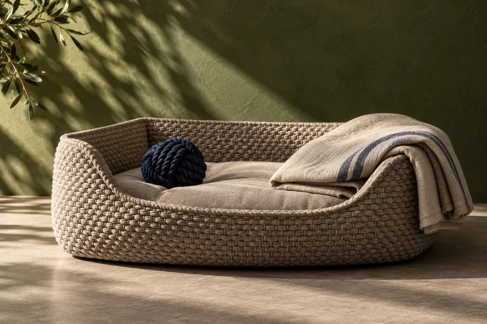
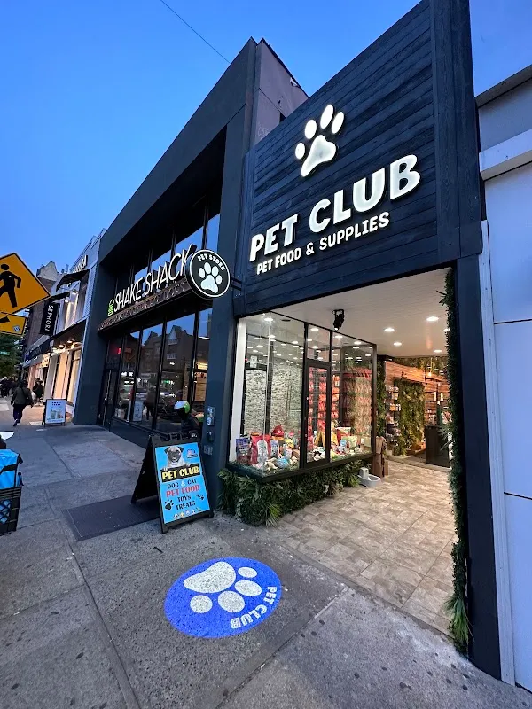
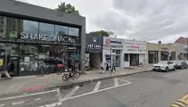

A place in
the Pet Club
A pet store in Queens. Explore a sample collection for everyday routines, then ask the shop about its real range.
Browse the club shelf →71-24A Austin St, Forest Hills, NY 11375

Choose the daily moment
Start with feeding, walking or play. Product details and suitability are confirmed by the store.
FeedingExplore the sample collection, then ask the store about the current range and availability.
Explore feeding →Demo selection. Confirm products, prices and availability with the store.
Objects for every day
Product illustrations demonstrate the collection. Each entry can hold real photography, quantity and availability.



A visit to Pet Club
Pet Club is at 71-24A Austin St, Forest Hills, NY 11375. Explore the business photographs, then plan a visit or call to ask about the current selection.
Plan your visit →